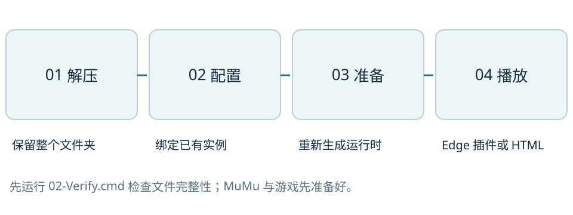
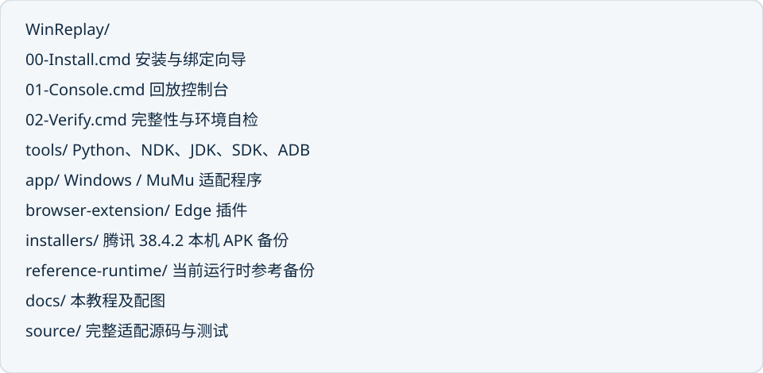
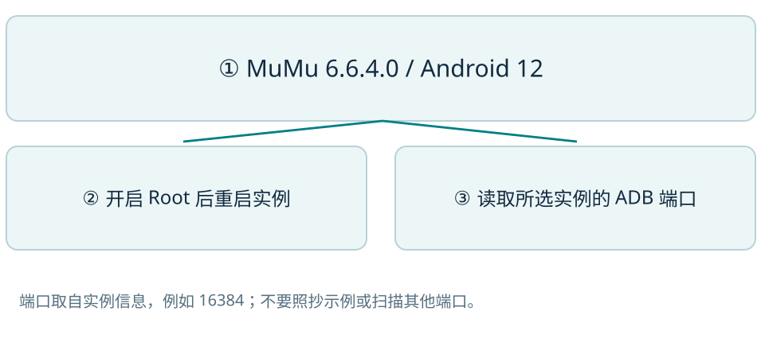
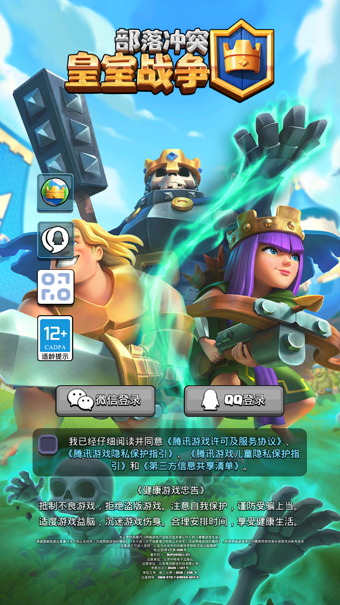
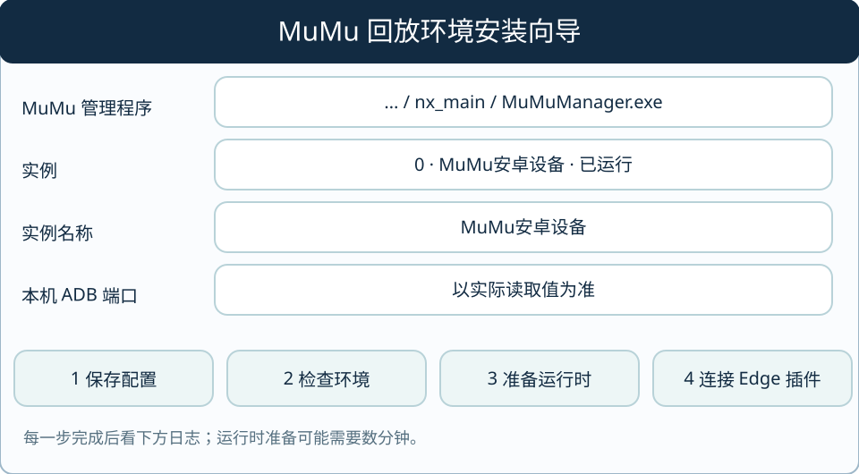
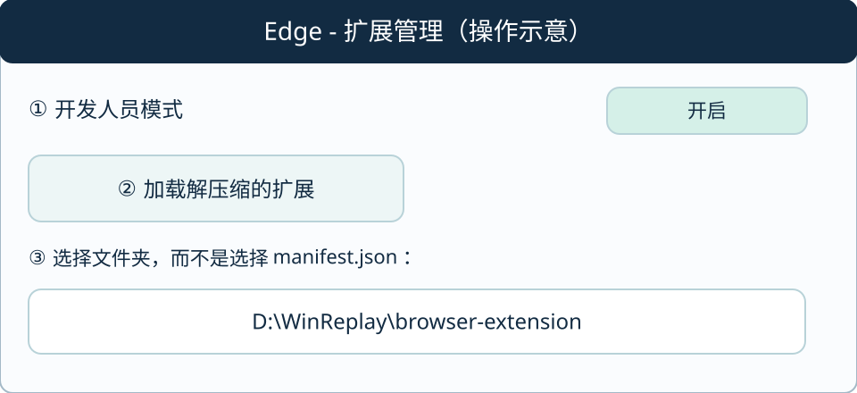
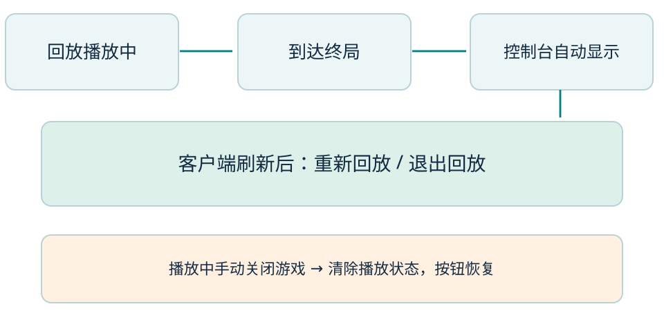

完整环境包 · 2026-10-19Windows + MuMu
回放环境安装手册
适用于把本次已验证的 Windows 回放适配迁移到另一台 Windows x64 电脑，或在当前电脑重新部署。按图完成准备、绑定、运行时生成和 Edge 插件连接。

图 1 从环境包到实际播放的完整路径| 本轮实测项目 | 版本 / 结果 |
|---|
| Windows 控制端 | Windows x64；Python 3.12.14 + Tkinter |
| MuMu / Android | MuMu 6.6.4.0；Android 12；x86_64 + ARM64 翻译层 |
| 腾讯客户端 | com.tencent.tmgp.supercell.clashroyale / 38.4.2 |
| 完整回放示例 | 127 条动作原生执行及 JSON 往返导入通过 |
| 结束与异常退出 | 返回控制台、刷新客户端、强退后恢复按钮已实测 |
安装与迁移01 认识环境包
环境包的运行工具与程序放在一起。目标电脑使用 Windows 10 / 11 x64，保留系统的 .NET Framework 4.x 供 Edge 桥接使用；不需要另行安装 Python、Android NDK、JDK 或 ADB，也不需要先配置系统 PATH。

图 2 解压后的目录结构；请保持这些文件夹的相对位置| 组件 | 随包内容 |
|---|
| Python | 3.12.14 基础运行环境，含标准库、DLL、Tkinter / Tcl |
| Android NDK | r27d / 27.3.13750724，含 Clang、LLDB、LLDB Python 及调试服务 |
| 辅助工具 | Temurin JDK 17.0.20.1+1、Android Build-tools 37.0.0、ADB 36 |
| 项目与参考 | 适配代码、浏览器插件、源码测试、当前游戏运行时参考备份 |
| 客户端备份 | 当前安装的腾讯 38.4.2 APK；账号由目标实例自行登录 |
安装与迁移02 从官方获取 MuMu
下载安装与版本选择
1. 打开 MuMu 官方下载入口：https://mumu.163.com/download/。官方首页：https://mumu.163.com/。本包按你的要求附官方入口，不附 MuMu 安装器。
2. 完成官方安装流程并启动 MuMu。当前官网下载页还提供其他 Android 版本；本适配实测的是 MuMu 6.6.4.0 下的 Android 12 实例。安装向导会读取版本，不把 Android 15 当成已验证的 Android 12。
3. 打开或准备你要使用的 Android 12 实例。之后所有操作都选择这个实例；多开列表中的其他实例保持原状。

图 3 必须核对的三个要点。设置栏目名称以实际 MuMu 界面为准。管理程序的默认位置
C:\Program Files\Netease\MuMu\nx_main\MuMuManager.exe
自定义安装目录时，在向导中点击“选择…”找到实际的 MuMuManager.exe。这个路径用于读取版本、实例名称和本机 ADB 端口。
安装与迁移03 准备匹配的腾讯客户端

1. 将 installers\tencent-clashroyale-38.4.2-local-backup.apk 拖入已启动的目标 MuMu 实例，按模拟器提示完成安装。
2. 打开游戏，确认是腾讯客户端 38.4.2。不要用旧的 Null’s Royale 项目或其他版本替代本次适配客户端。
3. 自行阅读游戏协议并按自己的选择完成微信 / QQ 登录。安装向导不接收账号、密码或验证码。
4. 等待进入普通大厅，再准备运行时和播放。不要停在登录页、对局中或场景切换中。
5. 如客户端要求更新，更新后的游戏库可能不再匹配；以运行时校验结果为准。
APK 是本机已安装客户端的文件备份，环境包没有复制已登录的模拟器虚拟磁盘。目标电脑登录后仍由它自己的 MuMu 实例保存账号状态。
安装与迁移04 启动向导并绑定实例
双击包根目录的 00-Install.cmd，出现“MuMu 回放环境安装向导”。不需要先安装系统 Python。

图 5 安装向导操作示意，文字对应随包提供的向导按钮。1. 检查“MuMu 管理程序”路径；有自定义目录时点击“选择…”。点击“读取实例”，从下拉框选择已经运行的 Android 12 实例。
2. 向导填入该实例的名称和本机 ADB 端口。示例 16384 只说明格式；必须以实际读取值为准。点击“1 保存配置”。
3. 配置写入 app\deploy-config.json，实例绑定写入 state\device.json。所有本机工具路径按当前解压目录生成。
安装与迁移05 检查环境与准备运行时
先检查主机环境
点击“2 检查环境”。日志中 host_ready 应为 true。首次安装时 runtime_prepared 为 false 是正常的，因为目标实例的运行时还没有生成。
再准备目标实例
1. 在所选 MuMu 实例的设置中开启 Root 权限并重启该实例。待 Android 与游戏恢复后进入大厅。
2. 点击“3 准备运行时”，阅读确认说明。该步会尝试让已开启 Root 的实例提供 ADB Root 调试访问；随后读取安装包、校验版本、生成地图资源并放置本项目调试组件。
3. 这个步骤可能需要数分钟。游戏 APK 约 1.50 GB，传输时间取决于电脑和模拟器。请等日志显示完成再进行下一步。
| 成功标志 | 含义 |
|---|
| host_ready: true | Python / Tkinter、NDK、LLDB Python 与 Android 调试支持可用 |
| runtime_prepared: true | 目标游戏库、资源、系统桥接库与辅助组件已准备 |
| Root 调试 UID 0 | 所选实例允许当前准备步骤读取和调试进程 |
已有运行时如何处理
重新准备时，向导把本包原有 runtime\native 及生成的资源头文件移入 state\runtime-backup-时间戳 备份，再生成新版本。发生错误时保留日志和备份，先按故障页定位。
安装与迁移06 连接 Edge 一键播放插件
先在向导点击“4 连接 Edge 插件”。它会为当前 Windows 用户注册本包的原生消息宿主；若已有另一个目录的回放桥接，确认切换后先记录原注册位置。

图 6 Edge 加载插件的操作示意。此步骤在浏览器中手动完成。1. 打开 Edge 菜单 → 扩展 → 管理扩展。也可自行在地址栏输入 edge://extensions。
2. 开启“开发人员模式”，点击“加载解压缩的扩展”。选择整个 WinReplay\browser-extension 文件夹。
3. 确认扩展名称为“RoyaleAPI → 官服回放”。为方便使用，可在 Edge 的扩展菜单中把它显示到工具栏。
4. 不需要修改 manifest.json，也不需要把插件复制到系统目录。原生消息只允许本包的固定扩展 ID。
dbjcdkkejbaccfpnicafnkjaehkjhkjf
官方操作参考：Microsoft Edge 扩展旁加载说明；通信方式见 Native messaging。
安装与迁移07 从网页或 HTML 开始播放
网页方式：打开一场 RoyaleAPI /replay?tag=… 回放详情页，等时间线与卡组加载完整，再点击工具栏的回放插件。
插件会把当前页的 HTML 发送到本机，打开控制台并显示准备状态。发送成功不等于画面已经就绪；以控制台和 MuMu 画面为准。
本地文件方式：双击 01-Console.cmd，点击“选择 HTML…”，选已有的完整回放 HTML，再点“播放回放”。
倍速可在播放前选择 0.25 / 0.5 / 1 / 2 / 4。首次回放可能需要校准、原生预演和往返导入。
同一完整内容已经验证过时，控制台会校验并复用缓存。不要在准备中连续重复提交。
演示回放公开入口：https://royaleapi.com/replay?tag=02JYPP0QJPPJ。网站是否仍保留此页面、是否需要登录，由 RoyaleAPI 决定。
安装与迁移08 播放完成与强制关闭

图 8 两种结束路径：正常完成与客户端被关闭。正常完成
到达原生终局后，控制台自动显示，并提供“重新回放”和“退出回放”。工具刷新它所拥有的本地回放客户端，重新打开游戏；再次回放时等待普通大厅就绪。
点击“重新回放”沿用刚才的完整 HTML 与倍速，发起新一轮播放。点击“退出回放”结束当前选择，返回可选择其他文件的控制台。
直接关闭游戏客户端
播放中关闭或强制退出游戏后，控制台清除旧进程的播放状态，恢复按钮。此时不会把旧地址或旧任务交给新进程。你可以重新打开游戏，再选择重新回放。
处理中取消
原生任务已经提交时，不会自动重复提交或直接释放还在使用的对象。“停止 / 安全取消”会等待该任务安全结束；若游戏进程已经消失，则结束该进程代际的等待。
安装与迁移09 常见问题排查
| 现象 / 提示 | 按顺序处理 |
|---|
| 双击向导没有出现窗口 | 完整解压到短目录；运行 02-Verify.cmd。确认 tools\python\pythonw.exe、DLLs、Lib、tcl 都在。 |
| MuMu 管理程序找不到 | 在向导手动选择实际 MuMuManager.exe；先启动所选 Android 12 实例，再读取实例。 |
| ADB 未连接 / 实例不符 | 重新读取实例，核对名称与实际端口。端口不是固定 16384；不要扫描或重置其他 ADB 设备。 |
| Root 调试未开启 | 在 MuMu 开启 Root 并重启同一实例，再点准备运行时。不要只改配置中的标志位。 |
| unvalidated / 游戏库不支持 | 核对 MuMu 6.6.4.0、Android 12、腾讯 38.4.2 及系统库指纹。保留错误信息，不跳过校验。 |
| LLDB Python / DLL 错误 | 确认 NDK 整个目录未被拆分，尤其 windows-x86_64\python3；重新运行完整性校验。 |
| 网页插件报本地桥接未连接 | 运行安装向导的第 4 步；确认插件 ID，重新打开弹窗。包移动后必须重新注册桥接。 |
| 只有发送成功，没有战场 | 查看控制台最后一条错误；完成登录并进入大厅，等待本轮准备结束。不要把发送成功当作播放通过。 |
| 目录迁移后无法运行 | 先退出回放并关闭控制台，移动整个文件夹，再重新保存配置、准备运行时、连接 Edge 插件。 |
完整性校验会读取数 GB 的文件，耗时取决于磁盘。准备失败后，日志保存在本轮输出或 state 备份中；保持这些记录，便于定位具体版本和步骤。
安装与迁移10 迁移、备份与目录搬家
迁移到新电脑
1. 复制 ZIP 并完整解压整个 WinReplay 文件夹。Python、NDK、JDK、构建工具及 ADB 随包移动。
2. 在目标电脑从官方安装 MuMu，准备匹配的 Android 12 实例与客户端，然后自行登录。目标实例的名字、端口和游戏 UID 可能不同。
3. 重新运行 00-Install.cmd，按当前目录保存配置，准备运行时，再注册 Edge 桥接并加载插件。
同一电脑移动目录
先退出本地回放并关闭控制台。移动整个 WinReplay，而不是只移动 app 或 Python。移动后重新完成向导步骤；浏览器插件也要改为加载新位置的文件夹。
建议保留的内容
保留整个原始 ZIP、SHA-256 校验文件、你自己的回放 HTML，以及需要保留的 app\official-web-replay\console-runs 日志和缓存。账号登录由 MuMu 自身管理。
运行时与数据的区别
reference-runtime 内是制作时的游戏库、系统代理库及地图头文件参考。它不代表目标电脑已经准备完成。设备运行时必须由向导针对当前实例重新确认。
安装与迁移11 验收与可复现检查
新电脑首次安装的检查清单
□ 02-Verify.cmd：所有清单文件校验通过；本地环境自检 passed 为 true。
□ 向导读取到正确 MuMu 版本、Android 12 实例、名称和端口。
□ 主机检查 host_ready 为 true。
□ 运行时准备 runtime_prepared 为 true，游戏停在普通大厅。
□ Edge 插件已加载，桥接连接到当前解压目录。
□ 完整回放显示原生战场，进度会变化。
□ 完成后控制台显示重播 / 退出，游戏客户端刷新。
□ 手动关闭本地回放客户端后，控制台恢复操作。
无需连接设备的本地自检
& ".\tools\python\python.exe" -X utf8 ".\install\portable_setup.py" self-test
自检核对 Python / Tcl、Clang、LLDB Python 与 remote-android 支持，并实际编译 x86_64 和 ARM64 两个辅助模块；同时检查 Java、Android 构建工具、ADB 和 .NET 原生消息宿主通信。它不连接模拟器，也不创建游戏任务。
本次制作的验证基线
当前部署已有 37 项回归测试通过。完整示例 127 条动作预演与重新导入全部通过，实际画面播放到终局；结束刷新和强退恢复也已实测。新电脑仍需按上方清单验收，不能仅靠解压成功判断回放成功。
安装与迁移12 版本、来源与目录说明
| 项目 | 本包记录 |
|---|
| Python | 3.12.14 / x64；包含基础标准库与 Tkinter |
| NDK / LLDB | Android NDK r27d，Pkg.Revision 27.3.13750724 |
| Java / SDK | Temurin 17.0.20.1+1；Android Build-tools 37.0.0 |
| ADB | MuMu 当前使用的 ADB 36.0.0 / protocol 1.0.41 |
| MuMu 与游戏 | 6.6.4.0 / Android 12；腾讯 38.4.2 |
| 游戏 libg SHA-256 | c6b2482a2f1fbd2e15c99df7fb18ba3d5596b77b3a81930d3638241a3c37fe55 |
组件原始许可与来源
Python 的 LICENSE.txt、NDK 的 NOTICE 与 NOTICE.toolchain、JDK 的 legal 目录、SDK 的 NOTICE.txt 和 ADB 的 licenses.txt 均随对应组件保留。source 保存适配源码，reference-runtime 保存本机参考文件。
官方参考入口
MuMu 下载：mumu.163.com/download
MuMu 默认管理程序：C:\Program Files\Netease\MuMu\nx_main\MuMuManager.exe
Edge 加载本地扩展：Microsoft Edge / Extension sideloading
Edge 原生消息：Microsoft Edge / Native messaging
Android NDK：developer.android.com/ndk/downloads/older_releases
官方页面与后续版本可能变化。MuMu 官方入口在制作时已成功访问；本地版本、程序文件与校验数据以随包 manifest.json、package-info.json 及运行时检查为准。